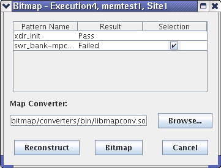

Selecting patterns
With this dialog, you can select the failing pattern that you want to analyze later with the BFM Viewer.
The Bitmap window (see following figure) pops up after you clicked Bitmap on the Testsuite/Site tab. It lists all patterns for the particular triplet of execution, test suite, and site number (shown in the title bar of the window).

Before you start the reconstruction, you can limit it to failed patterns by checking the checkbox in the Selection column.
Also you may change the default map converter by using the text field or the Browse button.
To start reconstruction, use the buttons on the bottom of the panel:
- Reconstruct: Reconstructs the selected patterns. A progress bar pops up for you to monitor the process. Click OK to close the window.
- Bitmap: Bitmap starts a reconstruction dialog (click OK) and then calls the BFM Viewer.
- Cancel: Closes this dialog.